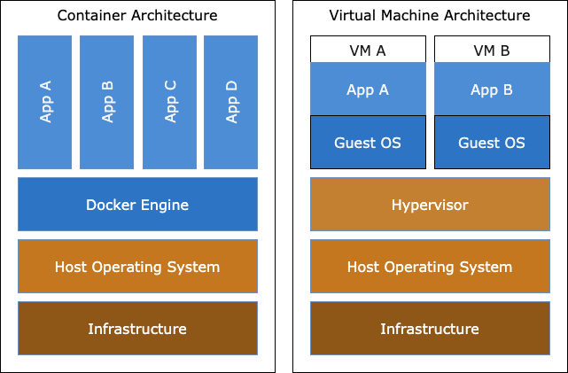
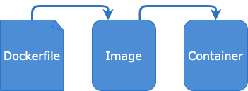

What is Docker page
Explore Docker concepts and architecture.
Overview
Traditional application deployment requires packaging application source code into an artifact and deploying it to a server that has a compatible operating system, runtime and other dependant libraries.
Docker exists to address these issues. Docker bundles runtime dependencies with application source code into an image - creating a unified experience whether an application is being run on a developer's workstation or a production server.
VMs vs Docker Containers
Virtual machines (VM) are an abstraction of a physical server turning one server into many. A hypervisor is installed on the host server allowing multiple VMs to run on a single machine. Each VM includes a full copy of an operating system (OS) making it resource intensive to run and slow to boot.
Containers are an abstraction at the app layer that packages application artifacts and dependencies together. The fundamental difference is containers share the same host operating system, but each container runs in it's own isolated process controlled by the Docker Engine. Containers are more lightweight than VMs and typically boot in seconds instead of minutes.

Dockerfiles, Images and Containers
A Dockerfile is used to build a Docker image. It is a plain-text file that contains a series of instructions telling Docker what operating system, application dependencies and application source code is required to run the application.
A Docker image is a static artifact that is built from a Dockerfile and is tagged and published to a registry where it can be shared.
A Docker container is a running instance of a Docker image.

Review
Docker images combine source code with the dependencies required to run an application. Images are built from Dockerfiles and are more lightweight and portable than traditional VMs making them great for both developers and operators.
Next we are going to build a simple NodeJS app before containerizing it.